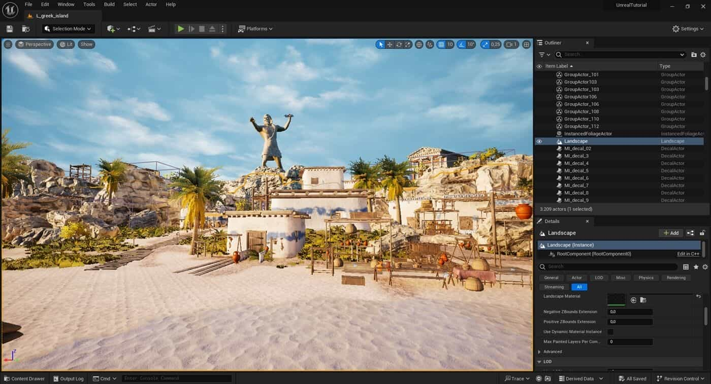
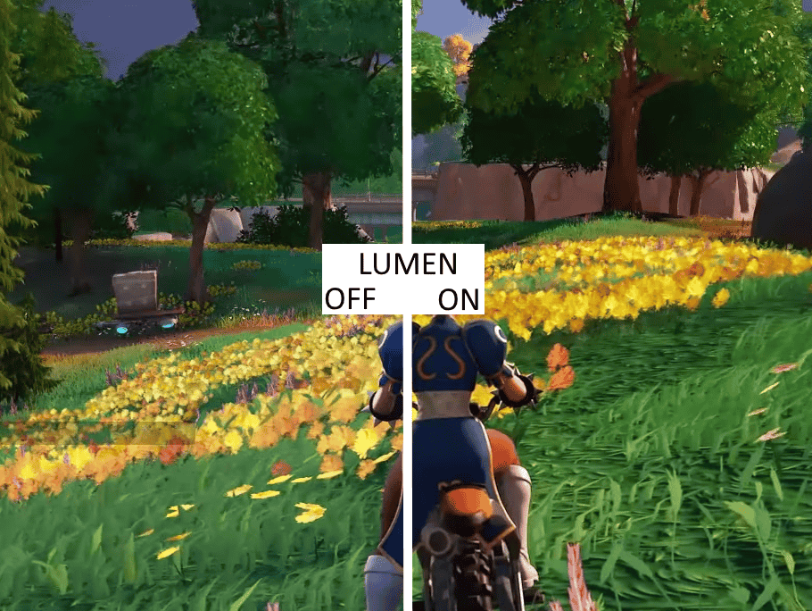
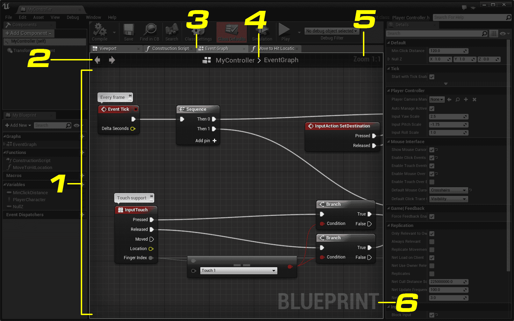
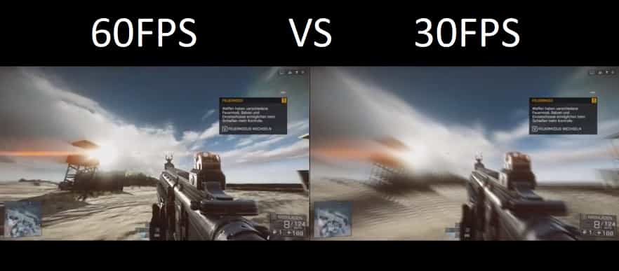

En pleine phase de pré-production, l'équipe de Sandfall Interactive prend une décision déterminante : abandonner Unreal Engine 4 pour basculer sur la toute nouvelle version 5 du moteur. Ce virage stratégique permet au studio de franchir un cap visuel majeur sans avoir à rallonger indéfiniment son calendrier de développement.
En s'appuyant sur les technologies intégrées d'Epic Games pour prendre en charge les tâches techniques les plus lourdes, une équipe à taille humaine d'une trentaine de personnes réussit à concevoir des graphismes dignes des plus grands jeux AAA. Dès les premières étapes de création, cette organisation permet de développer et d'adapter le jeu de manière fluide sur PC, PlayStation 5 et Xbox Series.

Pour donner vie à l'univers du jeu, le studio tire pleinement parti de la technologie Nanite. Ce système affiche des décors d'une richesse extrême en temps réel, libérant les graphistes de la création manuelle de versions simplifiées pour chaque objet.
L'éclairage dynamique Lumen gère quant à lui les reflets et la diffusion de la lumière naturelle sans réglages complexes, ce qui met en valeur l'esthétique "Belle Époque" des environnements. Enfin, l'outil Sequencer orchestre une continuité parfaite : le passage entre l'exploration, les scènes cinématographiques et le déclenchement des combats se fait de façon directe, sans le moindre écran de chargement.

Sur le plan de l'architecture logicielle, le studio fait le choix de conserver la structure d'origine d'Unreal Engine 5 sans trop la modifier. Cette approche permet d'intégrer rapidement les futures mises à jour du moteur d'Epic Games sans risquer de casser le travail déjà accompli.
Pour assurer des affrontements dynamiques, la programmation des combats est pensée pour offrir une réactivité maximale, garantissant des fenêtres d'esquive et de parade instantanées. Les designers s'appuient ensuite sur le système de programmation visuelle par blocs (Blueprints), ce qui leur donne toute l'autonomie nécessaire pour concevoir le comportement des monstres, les compétences des héros et la logique des quêtes.

Garantir un jeu visuellement très détaillé exige un travail d'optimisation constant. L'équipe met en place un chargement intelligent des décors pour afficher une image haute définition très nette tout en préservant la mémoire des consoles.
Plutôt que de reconstruire chaque élément à partir de zéro, le studio réutilise et adapte des banques d'objets et de textures existantes, gagnant un temps précieux sur la production. Enfin, des tests de performance réguliers permettent d'identifier et d'éliminer immédiatement les causes de ralentissement pour maintenir un affichage fluide à 60 images par seconde.